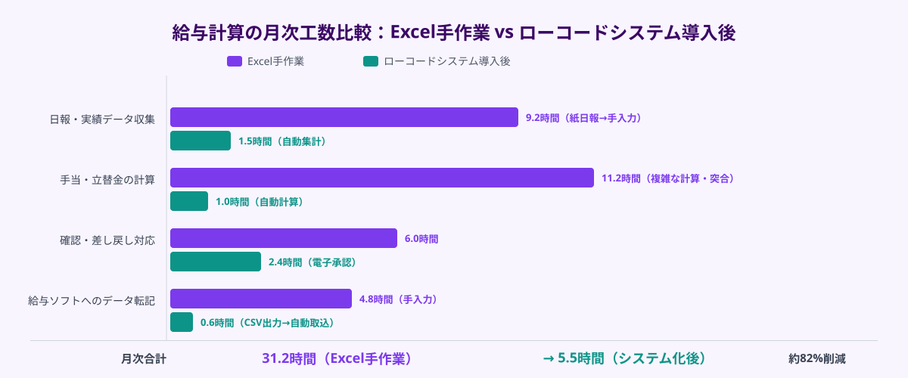
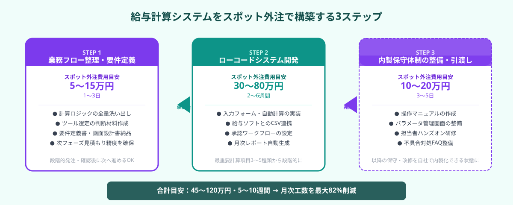

送迎・運輸業の給与計算がExcel手作業から抜け出せない理由
既存の給与管理ソフト（弥生給与・PCA給与等）や勤怠管理ツールと連携し、特殊手当・立替金の集計・計算を自動で処理する補助システム。汎用ソフトでは対応できない自社固有の計算ルールをローコード・ノーコードツールで実装し、担当者の手作業工数を削減する仕組み。
送迎・運輸業の給与計算が自動化しにくい根本的な理由は、業界固有の「複合型計算ロジック」にあります。一般的な給与ソフトが想定する「基本給＋時間外手当」という単純な構造とは大きく異なり、以下のような多層的な計算が必要になります。
- 距離・乗務回数に連動した手当：1日の走行距離や送迎回数に応じて手当金額が変わる。Excelでは日報データと手作業で突合が必要
- 早朝・夜間・休日の時間帯別乗率：運行時間帯によって基本給に対する乗率（1.25倍・1.35倍等）が変わる。シフト情報から自動計算する仕組みがないと、担当者が1行ずつ確認する
- 燃料費・駐車場代・高速料金の立替精算：運転手が立替えた実費を領収書から集計し給与に合算する。受領・確認・入力のフローが属人化している企業が多い
- 携帯電話・制服等の月次実費控除：会社貸与品の使用料や実費相当額を給与から差し引く計算が個人によって異なる
- 雇用形態の混在（正社員・パート・業務委託）：同じ職場内に複数の雇用形態が混在し、それぞれ計算ルールが異なる。Excelのシートが雇用形態ごとに分かれ、統合が手作業になっている
これらが重なり合うと、経理担当者1〜2名が月末に丸2〜3日かけてExcel作業をしているという状況が生まれます。ミスが発生するリスクが高く、担当者が異動・退職した際に引き継ぎが困難になるという問題も抱えます。
汎用の給与ソフトでは対応できない理由は、自社固有の計算ロジックをカスタム設定できる範囲に限界があるためです。一方で、基幹システムのフルスクラッチ開発は数百万円規模となりコストが見合いません。このギャップを埋めるのが「ローコード・ノーコードツールで構築する給与計算サブシステム」のスポット外注です。

ローコードツールで給与計算サブシステムを構築する3ステップ
ステップ1｜業務フロー整理・要件定義をスポット外注で実施する
最初のステップは、複雑な計算ロジックを「システムが処理できる形」に整理することです。ここを曖昧にしたまま開発に入ると、途中で仕様変更が続き費用と期間が膨らみます。スポット外注エンジニアに要件定義フェーズだけを依頼し、明確な仕様書を作成してから開発に進むことが、コスト最小化の鍵です。
要件定義フェーズでスポット外注エンジニアが行う作業
- 現行業務フローの「見える化」：担当者へのヒアリングと既存Excelシートの分析を通じて、給与計算の全フロー（データ収集→計算→確認→給与ソフト連携→支給）を図式化する。「なぜこの計算になるのか」の根拠も含めて文書化する
- 手当・控除ロジックの一覧化：全ての手当種別・控除項目について、計算式・発生条件・適用対象（雇用形態・役職等）を一覧表に整理する。担当者が口頭で把握している「暗黙ルール」を明文化することが最重要
- ローコードツール選定の判断材料作成：計算ロジックの複雑さ・連携先システム（勤怠管理・既存給与ソフト）・社内での保守担当者のITリテラシーをもとに、kintone・Power Apps・Airtable・スプレッドシート＋GASなどの候補ツールを比較評価する
- 要件定義書・画面設計の作成：「何の画面で何を入力し、どのように計算され、どこに出力するか」を記述した要件定義書と、主要画面のワイヤーフレームを作成する。これが次のステップの開発仕様書になる
① 手当・控除の種類は何種類あるか（すべて列挙）
② 計算の発生条件はどのデータを参照するか（日報・シフト・領収書等）
③ 既存の給与ソフトへのデータ連携はどの形式か（CSV出力・手入力・API連携）
④ 月次で発生する「例外処理」のパターン（特別手当・遡及修正等）
⑤ 社内の保守担当者（IT専任者がいるか、兼務担当者か）
このステップのスポット外注費用目安は5〜15万円・1〜3日です。エンジニアが現地または遠隔ヒアリングで要件を引き出し、要件定義書と画面設計書をセットで納品します。「何をどう作ればよいか」が明確になるため、次の開発フェーズの見積もり精度が大幅に上がります。
ステップ2｜ローコードツールで給与計算サブシステムを開発する
要件定義書をもとに、スポット外注エンジニアがローコード・ノーコードツールで給与計算サブシステムを構築します。このフェーズのポイントは「全機能を一度に作り込まない」こと。まず最も工数がかかっている計算項目（通常は距離手当か立替精算）に絞って初期バージョンを完成させ、段階的に機能を拡張します。
開発フェーズでスポット外注エンジニアが構築する機能
- データ入力フォームの整備：運転手別の日報・乗務実績・立替領収書をデジタルで入力・承認するフォームを作成する。紙の日報や口頭報告をそのままデジタル化することで、後工程の集計作業を自動化する
- 自動計算エンジンの実装：入力されたデータをもとに、手当種別ごとの計算ロジックをローコードツール上で実装する。「乗務距離×手当単価」「深夜係数×基本時給」などの複合計算を、担当者が触れるパラメータ設定として切り出す
- 既存給与ソフトとのデータ連携：計算結果を弥生給与・PCA給与・freee人事労務等へCSVで出力する機能を実装する。給与ソフト側の取り込み形式に合わせたフォーマット変換も含めて対応する
- 承認ワークフローの設定：計算結果を経理担当者→管理職→経営者と段階的に確認・承認する電子ワークフローを設定する。承認・差し戻しのステータス管理を自動化し、確認漏れを防ぐ
- 月次レポートの自動生成：給与集計後に、運転手別・手当種別・月別の支給実績レポートを自動生成する。管理会計や補助金申請に使える集計形式もあわせて設計する
kintone：既にkintoneを業務で使っている企業に最適。プラグインで計算機能を拡張しやすく、スポット外注エンジニアの対応実績も豊富。月額2,000円/ユーザー〜。
Power Apps（Microsoft 365環境）：既にMicrosoft 365を使っている企業に最適。Excel・Teamsとのシームレスな連携が強み。既存ライセンスに含まれるケースあり。
Airtable：柔軟なデータ構造と自動化機能を持ち、スプレッドシートに近い操作感で保守しやすい。月額20〜45ドル/ユーザー〜。
Googleスプレッドシート＋GAS：最も低コストで導入でき、担当者がExcelに慣れている環境に向く。複雑な計算ロジックはGASで実装し、保守担当者のITリテラシーが高い場合に有効。
このステップのスポット外注費用目安は30〜80万円・2〜6週間です。計算項目の数・連携先システムの複雑さ・承認フローの段数によって費用は変動します。初期バージョンは「最も工数削減効果が高い計算項目3〜5種類」に絞ることで、30〜50万円・2〜4週間に抑えられます。追加機能は稼働後の評価を見て段階的に発注するアプローチがリスクを最小化します。

ステップ3｜内製化できる形で引き渡し・保守体制を整える
開発が完了したら、スポット外注エンジニアに「引き渡しフェーズ」として内製保守体制の整備を依頼します。このフェーズを省略すると、手当単価の変更や新しい計算ロジックの追加のたびに毎回外注費用が発生し続けます。一度のスポット外注費用で「自走できる体制」を作ることが重要です。
引き渡しフェーズでスポット外注エンジニアが整備する内容
- 操作マニュアルの作成：日常的な入力操作・月次の集計実行・給与ソフトへのデータ出力手順を、スクリーンショット付きで分かりやすく記述したマニュアルを作成する。担当者が入れ替わっても引き継ぎできる粒度で記述する
- パラメータ管理画面の整備：手当単価・乗率・対象者区分など、変更頻度が高い設定値を「管理者専用の設定画面」として切り出す。エンジニアに依頼しなくても担当者が自分で変更できる項目を明確にする
- よくある不具合と対処法のFAQ：開発・テスト中に発生した不具合パターンと対処法、「このケースが来たらこうする」という例外処理の対応方法をまとめたFAQドキュメントを整備する
- 担当者向けハンズオン研修：システムを実際に使いながら操作を確認するハンズオン研修を1〜2時間実施する。「使い方が分からなくて誰も触らない」状態を防ぐための立ち上げサポート
- 軽微な改修依頼先の明確化：自社では対応できない改修が発生した場合に、スポット外注で依頼できる窓口（ANKENなど）と依頼時に伝えるべき情報の整理方法を案内する
① 手当単価・計算パラメータを担当者が自分で変更できるか
② 新規運転手の追加・退職処理を担当者が自分でできるか
③ 月次の集計操作・給与ソフトへのデータ出力を担当者が自分でできるか
④ 上記①〜③の手順が文書化されているか
⑤ 上記①〜③で手詰まりになったときに問い合わせできる先があるか
このステップのスポット外注費用目安は10〜20万円・3〜5日です。マニュアル作成・パラメータ管理画面の整備・研修を含めた費用です。引き渡しフェーズをスキップすると、1〜2年後に「システムがあるのに使われていない」「変更できなくて結局Excelに戻った」という結果になります。開発費用と同程度の重みで引き渡しフェーズへの投資を計画してください。
ローコードツール選定のポイントと費用目安（2026年）
給与計算サブシステムをスポット外注で構築する場合の総費用と期間は、ツール選定と開発スコープで大きく変わります。以下は2026年の市場水準をもとにした目安です。
① ミニマム構成（最重要計算項目3〜5種類・CSV出力のみ）：3〜4週間、費用 30〜50万円
要件定義5〜10万円＋開発20〜35万円＋引き渡し5〜10万円
② 標準構成（全手当・控除対応・承認ワークフロー・月次レポート含む）：6〜8週間、費用 60〜120万円
要件定義10〜15万円＋開発40〜80万円＋引き渡し10〜20万円
③ フル構成（勤怠システム・給与ソフト双方向API連携・複数拠点対応）：2〜4ヶ月、費用 150〜300万円
要件定義15〜20万円＋開発100〜230万円＋引き渡し15〜25万円
保守・改修（引き渡し後・年1〜2回の追加機能依頼）：5〜15万円/回（内容による）
フルスクラッチ開発（基幹システム・専用ソフト）と比較すると、ローコード・ノーコードツールでのサブシステム構築は初期費用を50〜70%程度削減できます。また、スポット外注の場合は「要件定義だけ依頼して方向性を確認してから開発に進む」という段階的な発注が可能なため、「頼んでみたら思ったよりも高かった」というリスクを最小化できます。
ツール選定の最重要基準は「保守担当者が自分で設定変更できるか」です。kintoneやPower Appsは管理画面から比較的容易に設定変更できますが、GASやPower Automateのコードベースの改修は担当者のITリテラシーが求められます。要件定義フェーズで担当者のスキルレベルを正直に伝え、エンジニアに適切なツールを提案してもらうことが重要です。
ANKENでスポット外注エンジニアを探す流れ
ANKENはAI開発・業務システム開発のスポット外注に特化したマッチングサービスで、kintone・Power Apps・Airtable・GASなどのローコード・ノーコードツールの開発実績を持つエンジニアが複数登録しています。給与計算システムの要件定義だけを依頼したいという段階的な発注にも対応しています。
- 無料相談（30分〜）：現在の給与計算フロー・使っている勤怠管理ツール・給与ソフトの種類・月次工数の問題点をヒアリングし、最適なシステム構成と費用感を整理します。「計算ロジックが複雑で外注できるか不安」という状態からご相談ください
- エンジニアのマッチング：業種（送迎・運輸・物流）と使用ツールに実績のあるローコード開発エンジニアを1〜3営業日以内にご提案します
- 要件定義フェーズから段階的にスタート：まず1〜3日のスポットで要件定義・ツール選定だけを依頼し、見積もりを確認してから開発フェーズに進むことが可能です
- 引き渡し後のスポット改修にも対応：稼働後に手当ルールの変更・新機能の追加が発生した場合も、同じエンジニアにスポットで改修依頼できます
「Excelでの給与計算が毎月末に丸2日かかっている」「担当者が退職しても引き継ぎできる仕組みにしたい」という状況であれば、ANKENへの無料相談から現状の工数とシステム化コストの試算を始められます。まずは30分の相談からお気軽にご連絡ください。
よくある質問
- Q. 給与計算の複雑なロジックはスポット外注エンジニアに正確に伝えられますか？
- A. 要件定義フェーズでエンジニアが現場担当者に直接ヒアリングするため、口頭で説明できる状態から依頼できます。既存のExcelシートを見せるだけでも計算ロジックを引き出せます。
- Q. 既存の給与ソフト（弥生給与等）との連携は可能ですか？
- A. ほとんどの給与ソフトはCSV取り込みに対応しているため、ローコードシステムからのCSV出力で連携できます。APIによる直接連携が必要な場合は要件定義時に確認します。
- Q. 小規模（運転手20〜30名規模）でもシステム化の費用対効果はありますか？
- A. 月次の手作業工数が2日（16時間）以上あれば、ミニマム構成（30〜50万円）で1〜2年以内に費用回収できます。規模より計算の複雑さで費用対効果が決まります。
まとめ
送迎・運輸業の給与計算サブシステムをスポット外注で構築する手順は、①業務フロー整理・要件定義（5〜15万円・1〜3日）→②ローコードツールでのシステム開発（30〜80万円・2〜6週間）→③内製保守体制の整備・引き渡し（10〜20万円・3〜5日）の3ステップです。汎用給与ソフトでは対応できない特殊手当・立替金の複合計算ロジックも、要件定義フェーズで正確に言語化すればローコードツールで実装できます。引き渡しフェーズまで含めて依頼することで、以降の保守・改修を自社で行える体制を整えられます。
「毎月末の給与計算に丸2〜3日かかっている」「担当者が退職したら引き継ぎができない」「特殊な計算ロジックを外注できるか不安」という状況であれば、ANKENへの無料相談から費用感と進め方を整理することが最初の一歩です。まずは30分の相談からお気軽にご連絡ください。